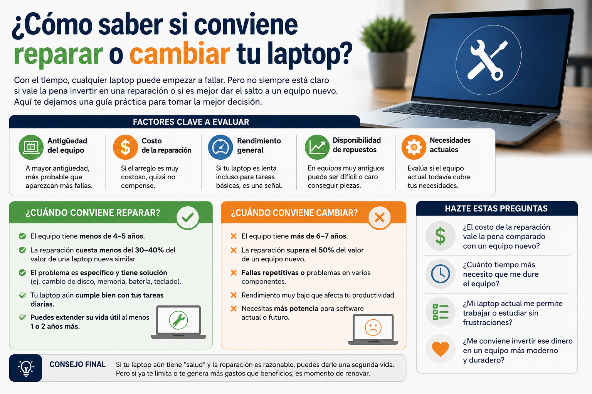
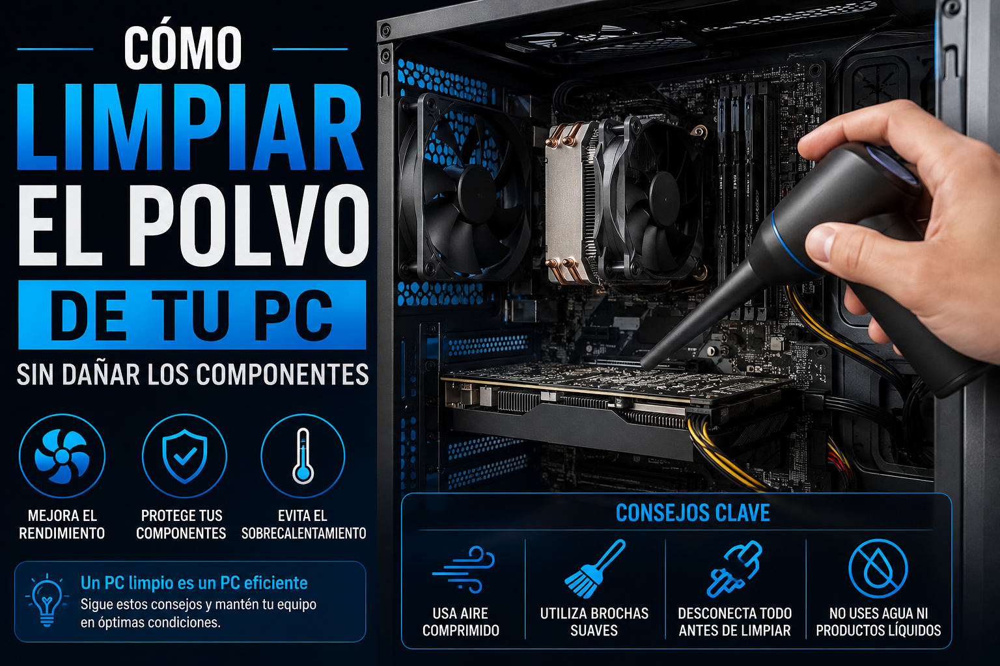
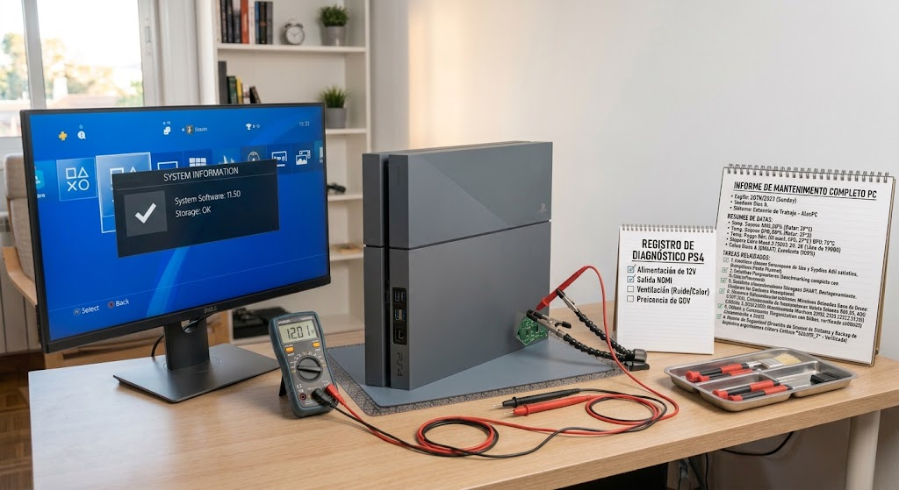

Laptops
¿Cómo saber si conviene reparar o cambiar tu laptop?
Un método para separar el diagnóstico, el costo real de la reparación y el valor que necesitas del equipo.
BIBLIOTECA NÚCLEOTECH
Hemos reducido la biblioteca a contenido que busca resolver una pregunta concreta: diagnosticar, mantener, configurar o decidir con mejor información.

Un método para separar el diagnóstico, el costo real de la reparación y el valor que necesitas del equipo.
La diferencia entre reiniciar, diagnosticar y restablecer de fábrica sin borrar una configuración que todavía funciona.

Qué limpiar primero, qué herramientas utilizar y cómo comprobar si la limpieza realmente mejoró el equipo.

Una ruta técnica para comprobar enlace, IP, gateway, DNS, rutas y NAT sin cambiar configuraciones a ciegas.

Comprueba el síntoma antes de desmontar y evita sustituir piezas sin evidencia.

Una secuencia para diferenciar alimentación, señales de vida y fallas internas antes de abrir la consola.